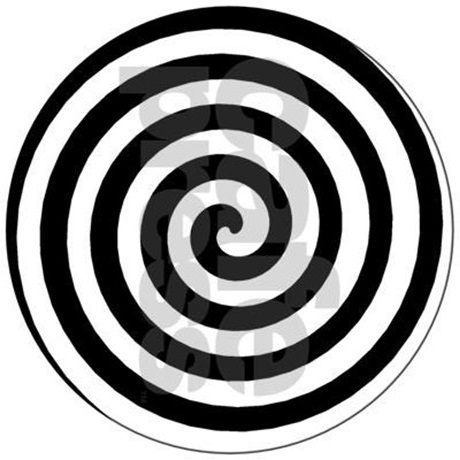

Artist Manifesto
Manifesto: Towards a Free Revolutionary Art 1938, Towards a Free Revolutionary Art was written by surrealist André Breton and Marxist Leon Trotsky as a reaction against the Soviet Union's mandated art.

REVOLUTION